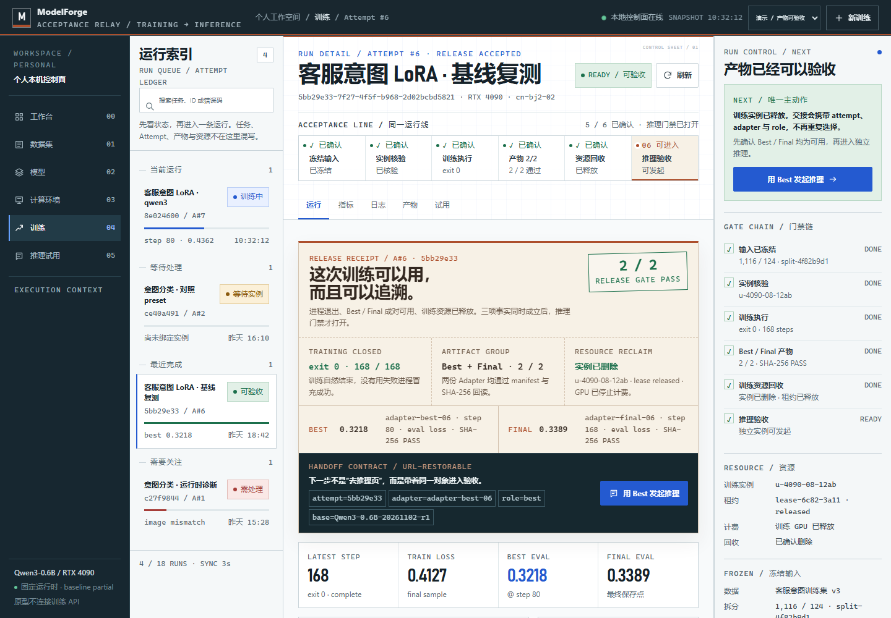

F4 / FORGE RELAY · MERGEDRECOMMENDED TO BUILD

成功验收 · 发布回执1440 × 1000
Merged production direction
合流台Forge Relay
把 F1 的“训练成功不等于可以用”变成贯穿所有页面的验收轨：F3 提供稳定的主从控制面，铜色发布回执集中交代进程、产物与资源三项事实，推理页接收同一份交接合同。
CORE ROUTE冻结输入 → 实例核验 → 训练执行 → 产物 2/2 → 资源回收 → 独立推理
成立之处
- 保留 F3 的生产结构，同时建立训练子域自己的识别度。
- 发布回执把进程退出、产物可用、GPU 释放拆开又收拢。
- Attempt / Adapter / role / base 进入 URL，刷新后仍可恢复。
取舍
- 暖色只集中在发布回执，避免整站换肤。
- 验收轨常驻页头，会占用一部分纵向空间。
- 仍需真实路由合同与后端字段才能进入正式实现。
- 实现成本
- 中
- 最适合
- 生产首版 / 连续验收
- 结论
- 推荐落地